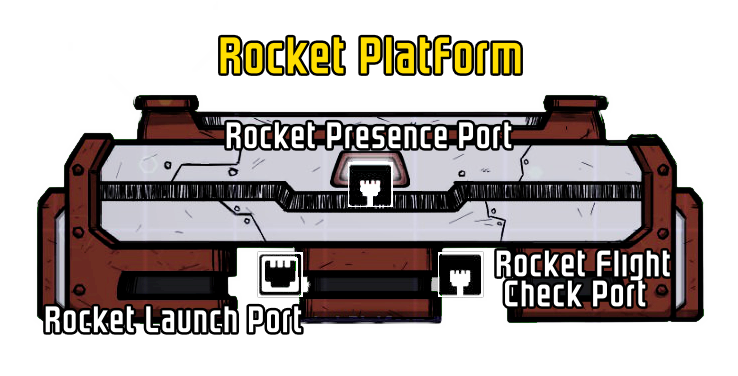
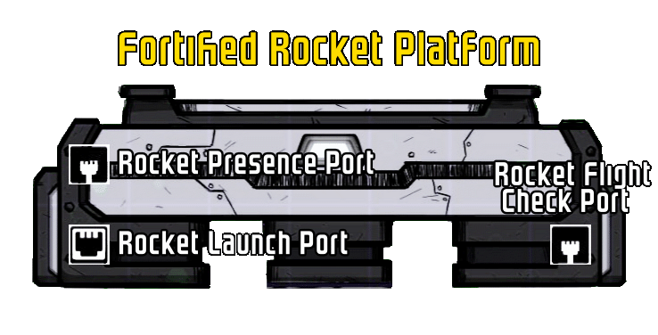
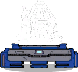
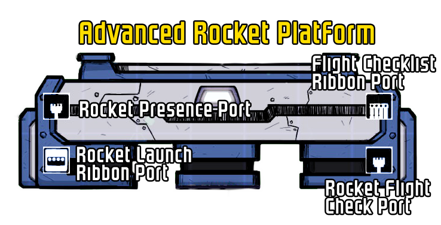

Rocket Platforms¶
Rocket Platforms mark the start of every rocket constructed. Rocketry Expanded adds two new rocket platforms, expanding on their functionality.
Both newly added platforms feature shifted logic ports. This feature prevents logic wires not made from tungsten from getting melted by the rocket exhaust on launch.
Rocket Platform (Vanilla)¶
All information about the normal rocket platform can be found in the ONI Wiki.
Logic port behaviour¶
Ports:

Behavior:
| Port | Type | How does this port work? |
|---|---|---|
| Rocket Presence Port | Output | Is there is a rocket on the launchpad? 🟩 ⇾ Yes 🟥 ⇾ No |
| Rocket Flight Check Port | Output | Is Rocket is ready to take a roundtrip flight to its chosen destination? 🟩 ⇾ Yes 🟥 ⇾ No |
| Rocket Launch Port | Input | 🟩 ⇾ the rocket will try to launch 🟥 ⇾ any launch attempts are canceled |
Fortified Rocket Platform¶
| Fortified Rocket Platform | A platform from which rockets can be launched and on which they can land. Fortified to withstand comets. |
|---|---|
| Sprite | |
| Building-ID | RTB_BunkerLaunchPad |
| Research | Superheated Forging |
| Building Category | Rocketry/Structural |
| Dimensions | 2x7 tiles |
| Decor | 0 |
| Materials | |
| Steel | 1200kg |
The Fortified Rocket Platform features the same logic ports as the normal Rocket Platform, however these are moved outside the rocket exhaust cone. This rocket platform is fortified. This makes it immune to meteor damage, and it blocks meteors from falling down further. It also blocks duplicants from walking in front of the platform, so keep it in mind when designing and building your base around it.
Logic port behaviour¶
Ports:

Behaviour:
| Port | Type | How does this port work? |
|---|---|---|
| Rocket Presence Port | Output | Is there is a rocket on the launchpad? 🟩 ⇾ Yes 🟥 ⇾ No |
| Rocket Flight Check Port | Output | Is Rocket is ready to take a roundtrip flight to its chosen destination? 🟩 ⇾ Yes 🟥 ⇾ No |
| Rocket Launch Port | Input | 🟩 ⇾ the rocket will try to launch 🟥 ⇾ any launch attempts are canceled |
Advanced Rocket Platform¶
| Advanced Rocket Platform | A platform from which rockets can be launched and on which they can land. Comes with shifted logic ports and extra ribbon ports for more control over the rocket. |
|---|---|
| Sprite |  |
| Building-ID | RTB_AdvancedLaunchPad |
| Research | Parallel Automation |
| Building Category | Rocketry/Structural |
| Dimensions | 2x7 tiles |
| Decor | 0 |
| Materials | |
| Refined Metals | 900kg |
The Advanced Rocket Platform features the same shift of logic ports as the Fortified Rocket Platform. Additionally, there is a ribbon output that outputs the state of the Launch Checklist.The Rocket Launch Port is converted to a ribbon input that allows to override Cargo Manifest warnings for automated rockets.
Logic port behaviour¶
Ports:

Behaviour:
| Port | Type | How does this port work? |
|---|---|---|
| Rocket Presence Port | Output | Is there is a rocket on the launchpad? 🟩 ⇾ Yes 🟥 ⇾ No |
| Rocket Flight Check Port | Output | Is Rocket is ready to take a roundtrip flight to its chosen destination? 🟩 ⇾ Yes 🟥 ⇾ No |
| Flight Checklist Ribbon Port | Ribbon Output | Bit 1: Is the category "Flight Route" fulfilled? 🟩⬛⬛⬛ ⇾ Yes 🟥⬛⬛⬛ ⇾ No Bit 2: Is the category "Rocket Construction" fulfilled? ⬛🟩⬛⬛ ⇾ Yes ⬛🟥⬛⬛ ⇾ No Bit 3: Is the category "Cargo Manifest" fulfilled? ⬛⬛🟩⬛ ⇾ Yes ⬛⬛🟥⬛ ⇾ No Bit 4: Is the category "Crew Manifest" fulfilled? ⬛⬛⬛🟩 ⇾ Yes ⬛⬛⬛🟥 ⇾ No |
| Rocket Launch Ribbon Port | Ribbon Input | Bit 1: 🟩⬛⬛⬛ ⇾ the rocket will try to launch 🟥⬛⬛⬛ ⇾ any launch attempts are canceled Bit 2: ⬛🟩⬛⬛ ⇾ Activates warning override for fuel check ⬛🟥⬛⬛ ⇾ Deactivates the override for the fuel check Bit 3: ⬛⬛🟩⬛ ⇾ Activates warning override for the cargo check ⬛⬛🟥⬛ ⇾ Deactivates the override for the cargo check. Bit 4: ⬛⬛⬛🟩 ⇾ Warning Overrides affect all logic checks; this makes them affect the logic outputs of the rocket platform. ⬛⬛⬛🟥 ⇾ Warning Overrides are only applied when the trigger-launch-signal on Bit 1 is active (during launch) |
Warning Override¶
The Rocket Launch Ribbon Port allows overriding Cargo Manifest Warnings - But what does that mean?
When a rocket is launched automatically (via Bit 1), it checks if the Launch Checklist Categories "Cargo Manifest" and "Rocket Construction" are in the state "Ready".
The Warning Override for the category of its Bit (see table under Logic port behaviour) overrides this behaviour, allowing the automated launch when the category displays a warning.
When you look at the items in the category "Cargo Manifest" you will see that these can appear orange, this equals a "Warning".
Warnings allow starting a rocket manually, but prevent an automated launch.
Activating a Warning Override will make it apply the "Ready" behaviour while being in either the "Ready" or "Warning" state.
Fueled State¶
For the "Fueled" state has the following state logic:
| State | Appearance | Logic behind it | Can the rocket launch like this? |
|---|---|---|---|
| 🟥 Error | Text is red | The rocket does not have enough fuel to reach its target location | No |
| 🟧 Warning | Text is orange | The rocket has enough fuel to reach its target location, but not enough for the trip back | only manually |
| ✅ Ready | Text is black, Checkmark is set | The rocket has enough fuel to reach its target location and come back without a refuel stop | yes, both manually and automatic |
Cargo State¶
The Cargo state is a bit special in its state logic:
| State | Appearance | Logic behind it | Can the rocket launch like this? |
|---|---|---|---|
| 🟧 Warning | Text is orange | There are ongoing loading/unloading operations | only manually (yes edge case described below) |
| ✅ Ready | Text is black, Checkmark is set | There are no ongoing loading/unloading operation | yes, both manually and automatic |
This check is "Ready" by default, and it only changes to "Warning" once any loader/unloader building (from now on called "resource transfer building") starts moving resources from or to the rocket.
This results in state of "Ready" for a few seconds while a rocket is landing, before these resource transfer buildings can start their work and change the state to "Warning".
When you don't account for this, the following can happen:
A rocket platform that has Bit 1 and Bit 2 enabled, while Bit 3 is disabled, will instantly launch after arriving, since the launch got already triggered before any resource transfer building could start their work and thus, the cargo state never switched to "Warning", which would have prevented the launch.
If you plan on creating such a scenario, the aforementioned behaviour can be circumvented by not enabling Bit 1 by default, but instead attaching it to the Rocket Presence Port with a Filter Gate in between.
This gives the resource transfer buildings the time to start their work and to update the Cargo state to "Warning".
But Why?¶
Using this override allows launching rockets automated that have uncompleted cargo transfer, not enough fuel for a roundtrip or both.
This allows setting up automated Rocket that are only fueled at one of the two rocket platforms. This works as following:
- Set up the two rocket platforms on their respective planets.
- Set up the refuel equipment at one of them, this is your refuel station, the other platform is the outpost.
- Enable the warning override on the planet without the refuel station. Keep it disabled on the refuel station rocket platform.
When an automated rocket has these two platforms set up with roundtrip function, it will start of at the refuel station. Here it will load up fuel, until the Rockets "Fueled" state reaches "Ready". Now it has enough fuel for a full roundtrip.
When it reaches the outpost, it will have burned 1/2 of its total fuel, making it go to the "Warning" state, since it still has (exactly) enough fuel to return to the refuel station, but not for a roundtrip afterwards. Since it gets fully fueled up once it has reached the refuel station, the warning can be safely ignored.
Now you have an automated rocket route that only requires refueling infrastructure on one of the two planets.